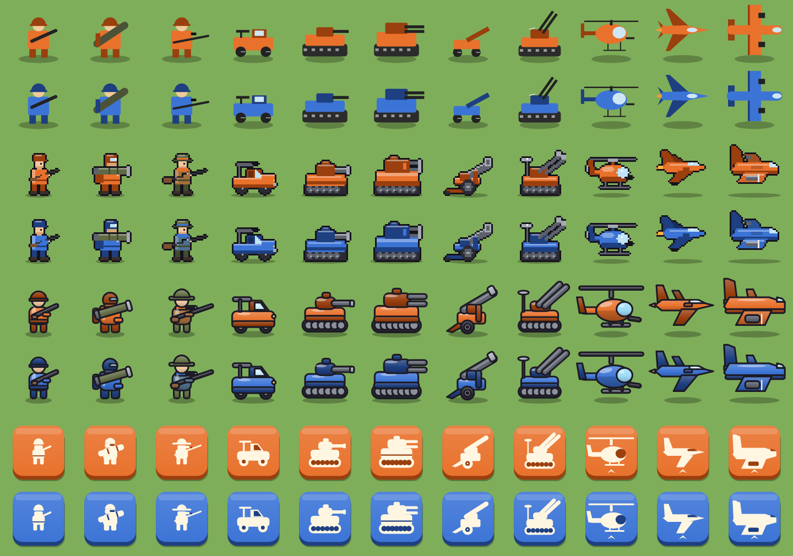
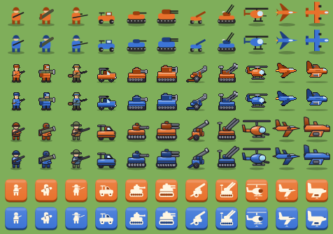
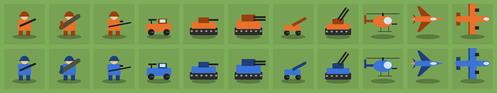
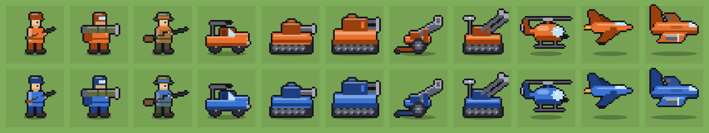
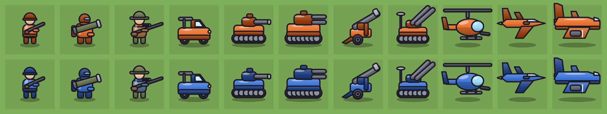
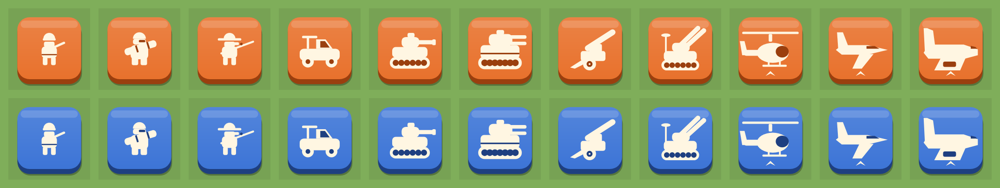

Unit art styles
Every unit, both factions, drawn by the same code that would ship in the game. Rows are Orange Star and Blue Moon. Swipe sideways on the wide sheets.
Side by side at phone size
Top to bottom: current, pixel, toy, badge. About a 40 px tile on a 3x screen.

Same thing at 1x (40 px tiles)
Where readability really gets decided. Shown at native size.

Current
Flat shapes, no outlines. Top-down aircraft next to side-view ground units.

Pixel art
32×32 grid with an automatic outline. Charming and very readable, but it wants whole-number scaling.

Toy vector
Bold outlines, gradients, highlights, and one consistent side view for every unit including aircraft.

Flat badge
Cream glyph on a faction plate. Clearest at tiny sizes, but hides the terrain under each unit.

Regenerate with the sprite lab: tools/sprite-lab in the repo.